Обзор
Flow Graph Отладчик усиливает интегрированный Flow Graph Редактор для отладки любого заданного Flow Graph.
Вы можете добавить Точки останова к любым входным или выходным портам данного узла.
Когда порт ввода или вывода с точкой останова активируется системой Flow Graph, игра будет поставлена на паузу. Тогда Flow Graph Редактор открывает узел, содержащий точку останова, и центрирует этот конкретный узел в средстве просмотра Flow Graph:
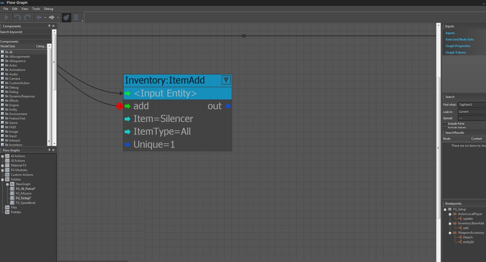
Включить отладку
Чтобы включить режим отладки, нажмите кнопку Отладка кнопка в Flow Graph панель инструментов:
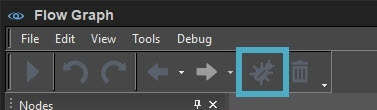
Добавление и удаление точек останова
Чтобы добавить новый Точка останова, щелкните правой кнопкой мыши на определенном порту и выберите Добавить точку останова. Вы также можете добавить точку останова, используя Ctrl + средняя кнопка мыши на конкретном порту.
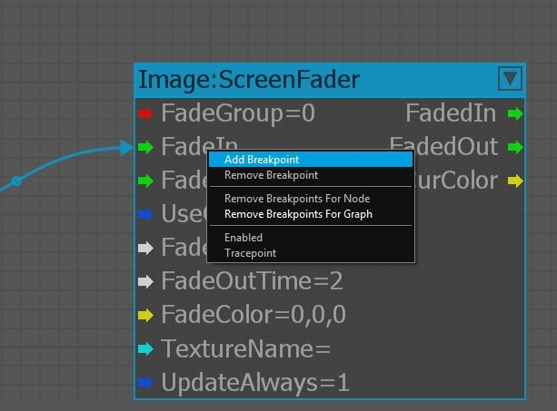
Чтобы удалить существующий Точка останова, щелкните правой кнопкой мыши на конкретном узле и выберите Удалить точку останова. Вы также можете добавить точку останова, используя Ctrl + средняя кнопка мыши.
Вы также можете удалить все точки останова для определенного узла потока или Flow Graph, используя следующие параметры:
- Удалить точки останова для узла
- Удалить точки останова для графика
Некоторые параметры контекстного меню отображаются серым цветом, если они недоступны. Например, если порт уже имеет точку останова, тогда опция Добавить точку останова будет выделен серым цветом. А если нет Точка останова существует на узле, Удалить точку останова опция будет неактивна.
При добавлении точки останова рядом с входным или выходным портом отображается красная точка.
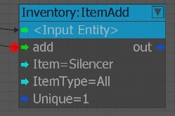
Включение и отключение точек останова
Вы можете отключить или включить конкретные точки останова по щелчок правой кнопкой мыши порты Flownode (первое изображение ниже) или Точка останова окно обзора (второе изображение ниже).
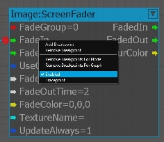
Включение или отключение точки останова с помощью окна обзора точек останова. 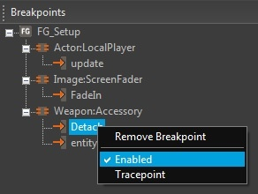
Использование точек трассировки
Вы можете преобразовать каждую точку останова в Точка трассировки. В отличие от точек останова, точка трассировки предотвращает приостановку игры, а информация о срабатывании точки останова будет направляться в консоль и файл журнала.
Преобразование точки останова в точку трассировки с помощью контекстного меню 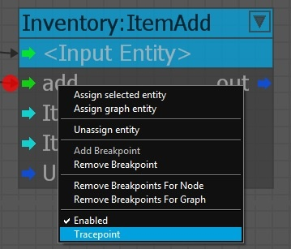
Преобразование точки останова в точку трассировки с помощью Окно обзора точек останова 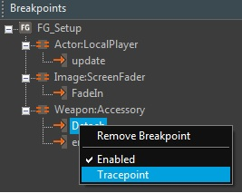
Пример вывода консоли:
[TRACEPOINT HIT - FrameID: 71054] GRAPH: AnimObject1 (ID: 96) - NODE: Объект: MaterialParam (ID: 5) - PORT: ValueColor - VALUE: 0.867136,0.005522,0.005522
Обзор точек останова
Редактор Flowgraph предоставляет панель обзора точек останова (в правом нижнем углу), позволяющую лучше просматривать все точки останова, добавленные в Flow Graph.
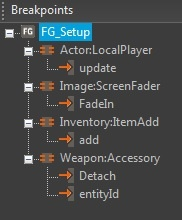
Когда вы нажимаете на точку останова в Обзор точек останова окне откроется соответствующий порт или в Flow Graph.
Вы также можете удалить определенную точку останова или точки останова во всем узле или Flow Graph, выполнив щелчок правой кнопкой мыши в Обзор точек останова панель.
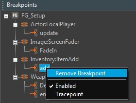
Возобновить игру
Чтобы возобновить игру, при достижении точки останова вы можете нажать F5 или нажмите на Играть кнопка в Flow Graph Редактор панель инструментов.
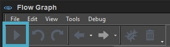
Базовый пример
В этом примере мы используем базовый Flow Graph, который должен вычислять случайное число, когда Р клавиша нажата.
Отладчик Flow Graph позволяет вам увидеть вычисленное случайное число без необходимости добавления отладочного сообщения.
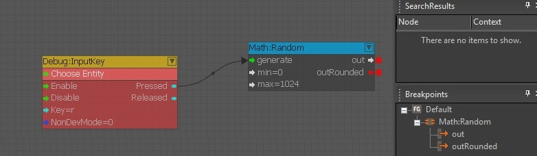
Когда Р клавиша нажата в игре, будет достигнута первая точка останова, и вы сможете увидеть вычисленное случайное число в Обзор точек останова окно в правом нижнем углу:
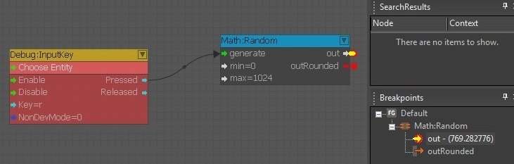
Когда вы нажимаете F5 или Играть кнопку на панели инструментов, будет достигнута вторая точка останова:
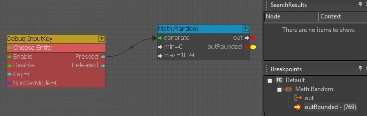
Когда вы нажимаете F5 или Играть кнопку еще раз, игра возобновится.